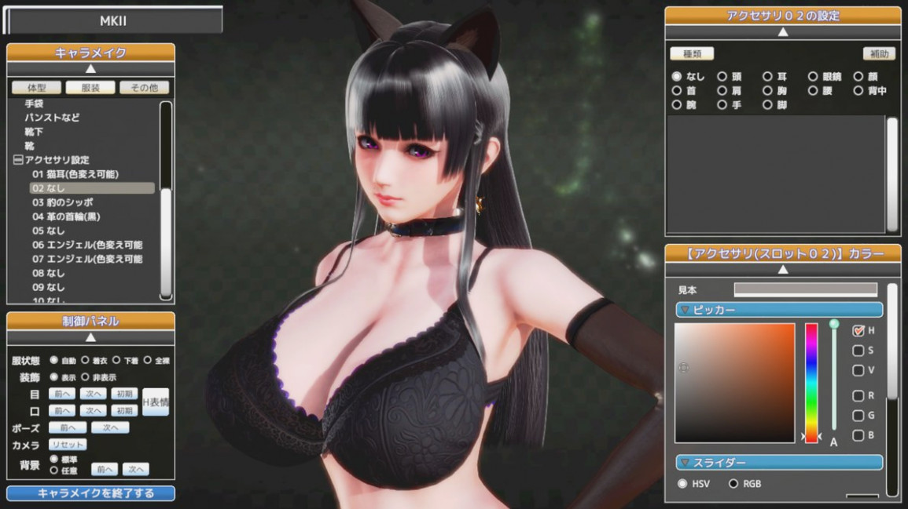

Honey Select 2
Honey Select 2 là một trò chơi Eroge thực tế ảo được Illusion sản xuất.
Giới thiệu
Honey Select 2 là một trò chơi điện tử tạo nhân vật rõ ràng. Giống như Koikatsu Party, trò chơi cung cấp cho người chơi một số lượng tùy chỉnh đáng kinh ngạc để tạo ra chiếc Waifu hoàn hảo. Khi bạn đã dành hàng giờ để lướt qua từng đường cong trên cơ thể cô ấy và tinh chỉnh tính cách của cô ấy, bạn có thể dạo chơi khắp nơi và thưởng thức một loạt các hình ảnh động tình dục..
Thiết lập của trò chơi rất đơn giản. Người phụ nữ trong mơ của bạn đang đợi sau cánh cửa của một khách sạn sang trọng. Không cần phải có cốt truyện phức tạp trong một trò chơi như thế này, và Honey Select 2 Libido thay vào đó tập trung vào việc tạo, khám phá và giới thiệu một bộ sưu tập các kịch bản khiêu dâm tương tác ấn tượng.
Rất ít game có thể sánh ngang với Honey Select 2 Libido khi nói đến khả năng tùy biến nhân vật. Trò chơi này cho phép một mức độ thay đổi thực sự đáng gờm với các điều khiển quyết định mọi thứ từ kích thước, độ nhọn, góc độ và độ mềm mại của bộ ngực nhân vật. Người chơi cũng có thể điều chỉnh chiều cao, dáng người hoặc hình dạng mắt của nhân vật, cũng như các đường rám nắng và bọng mắt của cô ấy.
Một khi bạn đã tạo nhân vật, bạn sẽ có thể tận hưởng khách sạn sang trọng và tất cả những phụ nữ mà bạn đã lấp đầy. Gọi một cô gái đến phòng của bạn nếu bạn đang muốn bắt đầu hành động hoặc đi dạo qua các hành lang của khách sạn và xem bạn đã gặp ai. Các sự kiện có thể xảy ra khi bạn đi ra ngoài, cung cấp các tùy chọn tương tác bổ sung trong phòng tắm, quầy bar và phòng ngủ khách sạn.
Lối chơi
Honey Select 2 Libido được xây dựng dựa trên phiên bản tiền nhiệm của nó bằng cách mở rộng các tùy chọn người chơi trên toàn trò chơi. Một loạt các địa điểm mới, trang phục, tư thế quan hệ tình dục và các tùy chọn tùy chỉnh giúp phần tiếp theo giống với bản gốc trong khi vẫn duy trì tiền đề đơn giản và hấp dẫn của nó.
Honey Select 2 Libido cũng cập nhật chế độ tạo nhân vật và chế độ studio, giúp hợp lý hóa các tương tác của người chơi với các cô gái mới của họ. Trò chơi có 11 tính cách nhân vật khác nhau, mặc dù một trong số đó đã thuộc về Für, người phụ nữ chào đón người chơi khi họ bước vào khách sạn. Illusion cũng đã thực hiện một bản cập nhật lớn cho chất lỏng để chúng trông thực tế và hấp dẫn hơn nhiều.
Các nhân vật bây giờ có thể làm ẩm cho đến khi chúng nhỏ giọt, và các nhân vật nữ có thể phun ra. Chất lỏng nói chung đã được cải thiện đáng kể, vì vậy hãy mong đợi mọi thứ từ mồ hôi đến nước mắt trông thực tế hơn nhiều.
Bạn có thể tham khảo thêm thông tin tại đây
Tải game
Hiện có thể tải game qua các nền tảng: Microsoft Windows.
Thông tin thêm
| Nhà phát triển | Illusion. |
| Nhà phát hành | Illusion. |
| Công Nghệ | Unity. |
| Nền tảng | Microsoft Windows. |
| Chế độ | Một người chơi. |
| Thể loại | 18+. |